Multimodal Neurons in Artificial Neural Networks
| AUTHORS | AFFILIATIONS | PUBLISHED | DOI |
|---|---|---|---|
| Gabriel Goh | OpenAI | March 4,2021 | 10.23915/distill.00030 |
| Nick Cammarata† | OpenAI | ||
| Chelsea Voss† | OpenAI | ||
| Shan Carter | Observable | ||
| Michael Petrov | OpenAI | ||
| Ludwig Schubert | |||
| Alec Radford | OpenAI | ||
| Chris Olah |
In 2005, a letter published in Nature described human neurons responding to specific people, such as Jennifer Aniston or Halle Berry [1] . The exciting thing wasn’t just that they selected for particular people, but that they did so regardless of whether they were shown photographs, drawings, or even images of the person’s name. The neurons were multimodal. As the lead author would put it: "You are looking at the far end of the transformation from metric, visual shapes to conceptual… information." 1
We report the existence of similar multimodal neurons in artificial neural networks. This includes neurons selecting for prominent public figures or fictional characters, such as Lady Gaga or Spiderman. 2, 3 Like the biological multimodal neurons, these artificial neurons respond to the same subject in photographs, drawings, and images of their name:
Biological Neuron
Probed via depth electrodes
CLIP Neuron
Neuron 244 from penultimate layer in CLIP RN50_4x
Previous Artificial Neuron
Neuron 483, generic person detector from Inception v1
Responds to Responds to photos of Halle photos of Berry and Halle Spiderman in Berry in costume costume and ✓ spiders ✓ ⟳ view more
Responds to faces Photorealistic im of people ✓
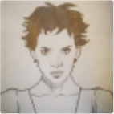
Responds to Responds to Does not respond Conceptual draw skeches of Halle comics or significantly to Berry drawings of drawings of faces ✓ Spiderman and ✕ spider-themed icons ⟳ view more ✓ Responds to the Responds to the Does not respond Images of text text “Halle Berry” text “spider” and significantly to text others ✓ ✕ ✓
⟳ view more
Note that images are replaced by higher resolution substitutes from Quiroga et al. [1] , and that the images from Quiroga et al. are themselves substitutes of the original stimuli.
People-detecting neurons only scratch the surface of the highly abstract neurons we've found. Some neurons seem like topics out of a kindergarten curriculum: weather, seasons, letters, counting, or primary colors. All of these features, even the trivial-seeming ones, have rich multimodality, such as a yellow neuron firing for images of the words “yellow”, “banana” and “lemon,” in addition to the color.
We find these multimodal neurons in the recent CLIP models [3] , although it's possible similar undiscovered multimodal neurons may exist in earlier models. A CLIP model consists of two sides, a ResNet [4] vision model and a Transformer [5] language model, trained to align pairs of images and text from the internet using a contrastive loss [6, 7] .4 There are several CLIP models of varying sizes; we find multimodal neurons in all of them, but focus on studying the midsized RN50-x4 model. 5 We refer readers to the CLIP blog post and paper [3] for more detailed discussion of CLIP’s architecture and performance. Our analysis will focus on CLIP's vision side, so when we talk about a multimodal neuron responding to text we mean the model "reading" text in images. 6
CLIP’s abstract visual features might be seen as the natural result of aligning vision and text. We expect word embeddings (and language models generally) to learn abstract "topic" features [8] . Either the side of the model which processes captions (the “language side”) needs to give up those features, or its counterpart, the “vision side”, needs to build visual analogues. 7, 8 But even if these features seem natural in retrospect, they are qualitatively different from neurons previously studied in vision models (eg. [9, 10, 11, 12] ). They also have real world implications: these models are vulnerable to a kind of “typographic attack” where adding adversarial text to images can cause them to be systematically misclassified.
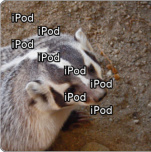
A typographic attack.
| iPod | 95.5% |
|---|---|
| weasel | 0.5% |
| remote control | 0.4% |
| hamster | 0.4% |
| meerkat | 0.2% |
| mongoose | 0.1% |
A Guided Tour of Neuron Families
What features exist in CLIP models? In this section, we examine neurons found in the final convolutional layer of the vision side across four models. A majority of these neurons seem to be interpretable. 9 Each layer consists of thousands of neurons, so for our preliminary analysis we looked at feature visualizations, the dataset examples that most activated the neuron, and the English words which most activated the neuron when rastered as images. This revealed an incredible diversity of features, a sample of which we share below:
Region Neurons
USA
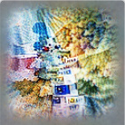
Europe
India
West Africa?
Show 3 more neurons.
These neurons respond to content associated with with a geographic region, with neurons ranging in scope from entire hemispheres to individual cities. Some of these neurons partially respond to ethnicity. See Region Neurons for detailed discussion.
Person Neurons
Donald Trump
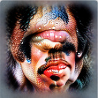
Elvis Presley
Lady Gaga
Ariana Grande
Show 1 more neuron.
These neurons respond to content associated with with a specific person. See Person Neurons for detailed disucssion.
Emotion Neurons
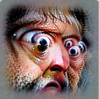
shocked
crying
happy
sleepy
Show 1 more neuron.
These neurons respond to facial expressions, words, and other content associated with an emotion or mental state. See Emotion Neurons for detailed discussion.
Religion Neurons
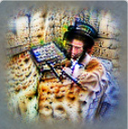
Judaism
Hinduism
Catholicism
Bible
Show 2 more neurons.
These neurons respond to features associated with a specific religion, such as symbols, iconography, buildings, and texts.
Person Trait Neurons
teenage
elderly
female
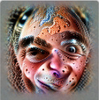
male
Show 4 more neurons.
These neurons detect gender 10 and age, as well as facial features like mustaches. (Ethnicity tends to be represented by regional neurons.)
Art Style Neurons
drawing
painting
anime
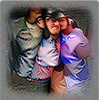
group photo
Show 7 more neurons.
These neurons detect different ways in which an image might be drawn, rendered, or photographed.
Image Feature Neurons
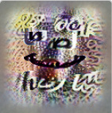
image edit
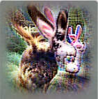
bunny ears
nametag
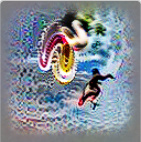
flying/jumping
Show 8 more neurons.
These neurons detect features that an image might contain, whether it's normal object recognition or detection of more exotic features such as watermarks or sneaky bunny ears.
Halloween
Christmas
Easter
birthday
Show 2 more neurons.
These neurons recognize the names, decorations, and traditional trappings around a holiday.
Fictional Universe Neurons
Pokémon
Star Wars
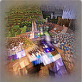
Minecraft
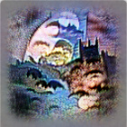
Batman
Show 4 more neurons.
These neurons represent characters and concepts from within particular fictional universes.
Brand Neurons
Disney
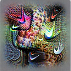
Nike
Apple & apples
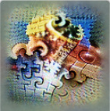
Lego
Show 7 more neurons.
Like the neurons that recognize the identities of people, these neurons recognize brand identities.
Typographic Neurons
"un-"
"con-"
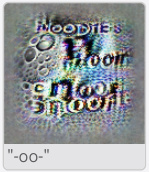
"-oo-"
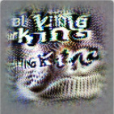
"-ing"
Show 2 more neurons.
Surprisingly, despite being able to “read” words and map them to semantic features, the model keeps a handful of more typographic features in its highlevel representations. Like a child spelling out a word they don’t know, we suspect these neurons help the model represent text it can’t fully read.
Abstract Concept Neurons
you
star
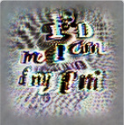
I / me
LGBTQ+
Show 8 more neurons.
Finally, many of the neurons in the model contribute to recognizing an incredible diversity of abstract concepts that cannot be cleanly classified into the above categories.
Counting Neurons
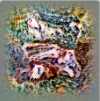
trios
pairs or fours
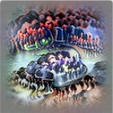
many
These neurons detect duplicates of the same person or thing, and can distinguish them by their count.
Time Neurons
day
month
year
historical
Show 4 more neurons.
These neurons respond to any visual information that contextualizes the image in a particular time – for some it's a season, for others it's a day or a month or a year, and for yet others it may be an entire era.
Color Neurons
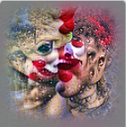
red
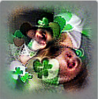
green
blue
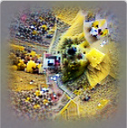
yellow
Show 2 more neurons.
These neurons detect the presence of objects in the given color.
Polysemantic Neurons
turtle + PhD + ?
self + relief + ?
smart + ?
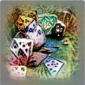
dice + poet + ?
The feature visualizations and dataset examples of these neurons demonstrate some polysemanticity.
Figure 1: This diagram presents selected neurons from the final layer of four CLIP models, hand organized into "families" of similar neurons. Each neuron is represented by a feature visualization (selected from regular or faceted feature visualization to best illustrate the neuron) with human-chosen labels to help quickly provide a sense of each neuron. Labels were picked after looking at hundreds of stimuli that activate the neuron, in addition to feature visualizations.
You can click on any neuron to open it up in OpenAI Microscope to see feature visualizations, dataset examples that maximally activate the neuron, and more.
These neurons don’t just select for a single object. They also fire (more weakly) for associated stimuli, such as a Barack Obama neuron firing for Michelle Obama or a morning neuron firing for images of breakfast. They also tend to be maximally inhibited by stimuli which could be seen, in a very abstract way, as their opposite. 11
How should we think of these neurons? From an interpretability perspective, these neurons can be seen as extreme examples of “multi-faceted neurons” which respond to multiple distinct cases [13] . Looking to neuroscience, they might sound like “grandmother neurons,” 12 but their associative nature distinguishes them from how many neuroscientists interpret that term [14] . The term “concept neurons” has sometimes been used to describe biological neurons with similar properties [15] , but this framing might encourage people to overinterpret these artificial neurons. Instead, the authors generally think of these neurons as being something like the visual version of a topic feature, activating for features we might expect to be similar in a word embedding.
Many of these neurons deal with sensitive topics, from political figures to emotions. Some neurons explicitly represent or are closely related to protected characteristics: age, gender, race, religion, sexual orientation, 13 disability and mental health status, pregnancy and parental status. 14 These neurons may reflect prejudices in the “associated” stimuli they respond to, or be used downstream to implement biased behavior. There are also a small number of people detectors for individuals who have committed crimes against humanity, and a “toxic” neuron which responds to hate speech and sexual content. Having neurons corresponding to sensitive topics doesn’t necessarily mean a network will be prejudiced. You could even imagine explicit representations helping in some cases: the toxic neuron might help the model match hateful images with captions that refute them. But they are a warning sign for a wide range of possible biases, and studying them may help us find potential biases which might be less on our radar. 15
CLIP contains a large number of interesting neurons. To allow detailed examination we’ll focus on three of the “neuron families” shown above: people neurons, emotion neurons, and region neurons. We invite you to explore others in Microscope.
Person Neurons
Content Warning
This section will discuss neurons representing present and historical figures. Our discussion is intended to be descriptive and frank about what the model learned from the internet data it was trained on, and is not endorsement of associations it makes or of the figures discussed, who include political figures and people who committed crimes against humanity. This content may be disturbing to some readers.
To caption images on the Internet, humans rely on cultural knowledge. If you try captioning the popular images of a foreign place, you’ll quickly find your object and scene recognition skills aren't enough. You can't caption photos at a stadium without recognizing the sport, and you may even need to know specific players to get the caption right. Pictures of politicians and celebrities speaking are even more difficult to caption if you don’t know who’s talking and what they talk about, and these are some of the most popular pictures on the Internet. Some public figures elicit strong reactions, which may influence online discussion and captions regardless of other content.
With this in mind, perhaps it’s unsurprising that the model invests significant capacity in representing specific public and historical figures — especially those that are emotional or inflammatory. A Jesus Christ neuron detects Christian symbols like crosses and crowns of thorns, paintings of Jesus, his written name, and feature visualization shows him as a baby in the arms of the Virgin Mary. A Spiderman neuron recognizes the masked hero and knows his secret identity, Peter Parker. It also responds to images, text, and drawings of heroes and villians from Spiderman movies and comics over the last half-century. A Hitler neuron learns to detect his face and body, symbols of the Nazi party, relevant historical documents, and other loosely related concepts like German food. Feature visualization shows swastikas and Hitler seemingly doing a Nazi salute.
Jesus
Hitler
CASE STUDY: DONALD TRUMP NEURON
Which people the model develops dedicated neurons for is stochastic, but seems correlated with the person's prevalence across the dataset 16 and the intensity with which people respond to them. The one person we’ve found in every CLIP model is Donald Trump. It strongly responds to images of him across a wide variety of settings, including effigies and caricatures in many artistic mediums, as well as more weakly activating for people he’s worked closely with like Mike Pence and Steve Bannon. It also responds to his political symbols and messaging (eg. “The Wall” and “Make America Great Again” hats). On the other hand, it most negatively activates to musicians like Nicky Minaj and Eminem, video games like Fortnite, civil rights activists like Martin Luther King Jr., and LGBT symbols like rainbow flags.
To better understand this neuron we estimate the conditional
probability of several categories of images at different activation levels using human labeling.
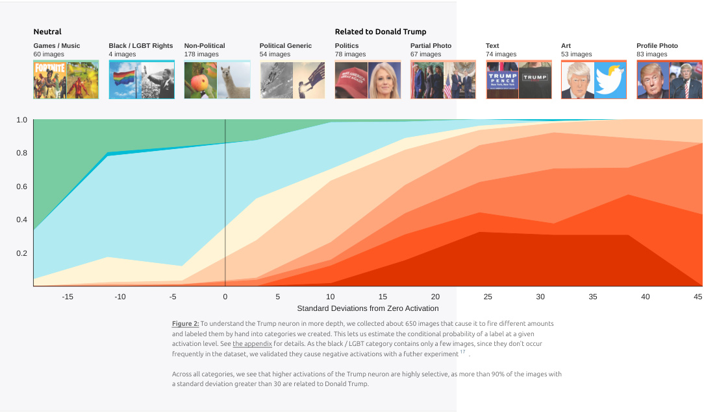
Neutral Related to Donald Trump
Games / Music Black / LGBT Rights Non-Political Political Generic Politics Partial Photo Text Art Profile Photo
60 images 4 images 178 images 54 images 78 images 67 images 74 images 53 images 83 images
1.01.0
0.80.8
0.60.6
0.40.4
0.20.2
-15-15 -10-10 -5-5 0 5 1010 1515 2020 2525 3030 3535 4040 4545
Standard Deviations from Zero ActivationStandard Deviations from Zero Activation
Figure 2: To understand the Trump neuron in more depth, we collected about 650 images that cause it to fire different amounts
and labeled them by hand into categories we created. This lets us estimate the conditional probability of a label at a given
activation level. See the appendix for details. As the black / LGBT category contains only a few images, since they don't occur
frequently in the dataset, we validated they cause negative activations with a futher experiment 17 .
Across all categories, we see that higher activations of the Trump neuron are highly selective, as more than 90% of the images with
a standard deviation greater than 30 are related to Donald Trump.
While labeling images for the previous experiment it became clear the neuron activates different amounts for specific people. We can study this more by searching the Internet for pictures of specific people and measuring how the images of each person makes the neuron fire.
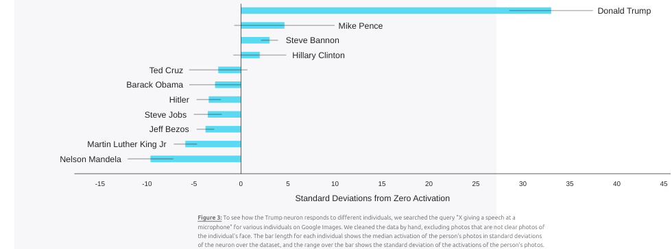
Donald TrumpDonald Trump
Donald TrumpDonald Trump Mike PenceMike Pence
Mike PenceMike Pence
Steve BannonSteve Bannon Steve BannonSteve Bannon
Hillary ClintonHillary Clinton
Hillary ClintonHillary ClinTed CruzTed Cruz to n
Ted CTed C ruru zz
Barack ObamaBarack Obama
Barack ObaBarack Oba m maa
HitlerHitler
HitHit ll erer
Steve JSteve JSteve JobsSteve Jobs oo bsbs
Jeff BezosJeff Bezos
Jeff BeJeff Be z zosos
Martin Luther King JrMartin Luther King Jr
Martin Luther KiMartin LuthNelsonNNelson MandelaNelson Mandelaelsoner ManMan Ki n n deladela g g JrJr
-15-15 -10-10 -5-5 0 5 1010 1515 2020 2525 3030 3535 4040 4545
Standard Deviations from Zero ActivationStandard Deviations from Zero Activation
Figure 3: To see how the Trump neuron responds to different individuals, we searched the query "X giving a speech at a
microphone" for various individuals on Google Images. We cleaned the data by hand, excluding photos that are not clear photos of
the individual's face. The bar length for each individual shows the median activation of the person's photos in standard deviations
of the neuron over the dataset, and the range over the bar shows the standard deviation of the activations of the person's photos.
Presumably, person neurons also exist in other models, such as facial
recognition models. What makes these neurons unique is that they respond to the person across modalities and associations, situating them in a cultural context. In particular, we're struck by how the neuron's response tracks an informal intuition with how associated people are. In this sense, person neurons can be thought of as a landscape of person-associations, with the person themself as simply the tallest peak.
Emotion Neurons
Content Warning
This section will discuss neurons representing emotions, and a neuron for “mental illness.” Our discussion is intended to be descriptive and frank about what the model learned from the internet data it was trained on and is not endorsement. This content may be disturbing to some readers.
Since a small change in someone's expression can radically change the meaning of a picture, emotional content is essential to the task of captioning. The model dedicates dozens of neurons to this task, each representing a different emotion.
These emotion neurons don’t just respond to facial expressions associated with an emotion -- they’re flexible, responding to body language and facial expressions in humans and animals, drawings, and text. For example, the neuron we think of as a happiness neuron responds both to smiles, and words like “joy.” The surprise neuron activates even when the majority of the face is obscured. It responds to slang like "OMG!" and "WTF", and text feature visualization produces similar words of shock and surprise. There are even some emotion neurons which respond to scenes that evoke the emotion's “vibe,” such as the creative neuron responding to art studios. 18 Of course, these neurons simply respond to cues associated with an emotion and don’t necessarily correspond to the mental state of subjects in an image. 19
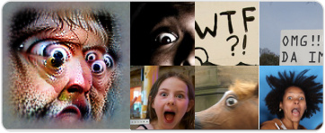
Surprise / Shock
In addition to these emotion neurons, we also find which neurons respond to an emotion as a secondary role, but mostly respond to something else. We’ll see in a later section that a neuron which primarily responds to jail and incarceration helps represent emotions such as “persecuted.” Similarly, a neuron that primarily detects pornographic content seems to have a secondary function of representing arousal. And a neuron which responds most strongly to question marks contributes to representing “curious.”
Incarcerated
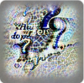
Question Mark
ons m to primarily ns.
face pose Shocked Crying
pose text
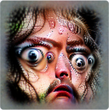
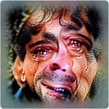
Happy
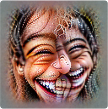
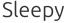
Sleepy
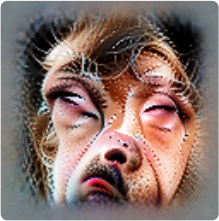
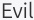
Evil
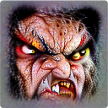
Punished
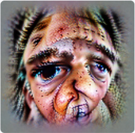
Serious
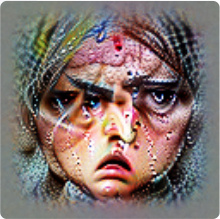
Soft smile
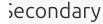
Secondary
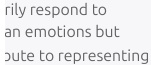
rily respond to
an emotions but
bute to representing
Incarcerated
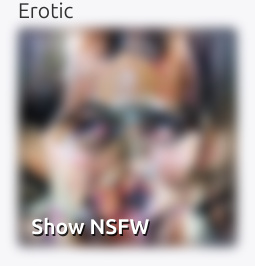
Erotic
Show NSFW
Rejected
Question Mark
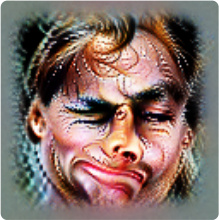
Figure 4: Emotion neurons respond to a wide range of stimuli: facial expressions, body language, words, and more. We can use faceted feature visualization to see some of these different facets. In particular, the face facet shows facial expressions corresponding to different emotions, such as smiling, crying, or wide-eyed shock. Click on any neuron to open it in Microscope to see more information, including dataset examples.
While most emotion neurons seem to be very abstract, there are also some neurons which simply respond to specific body and facial expressions, like the silly expression neuron. It activates most to the internet-born duckface expression and peace signs, and we'll see later that both words show up in the maximally corresponding captions.
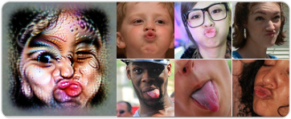
Silly Expressions
CASE STUDY: MENTAL ILLNESS NEURON
One neuron that doesn't represent a single emotion but rather a high level category of mental states is a unit we conceptualize as a "mental illness" neuron. This neuron activates when images contain words associated with negative mental states (eg. “depression,” “anxiety,” “lonely,” “stressed”), words associated with clinical mental health treatment (“psychology”, “mental,” “disorder”, “therapy”) or mental health pejoratives (“insane,” “psycho”). It also fires more weakly for images of drugs, and for facial expressions that look sad or stressed, and for the names of negative emotions.
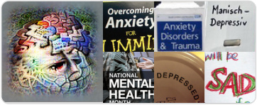
Mental Illness
Ordinarily, we wouldn’t think of mental illness as a dimension of emotion. However, a couple things make this neuron important to frame in the emotion context. First, in its low-mid range activations, it represents common negative emotions like sadness. Secondly, words like “depressed” are often colloquially used to describe non-clinical conditions. Finally, we’ll see in a later section that this neuron plays an important role in captioning emotions, composing with other emotion neurons to differentiate “healthy” and “unhealthy” versions of an emotion.
To better understand this neuron we again estimated the conditional probabilities of various categories by activation magnitude. The strongest positive activations are concepts related to mental illness. Conversely, the strongest negative activations correspond to activities like exercise, sports, and music events.
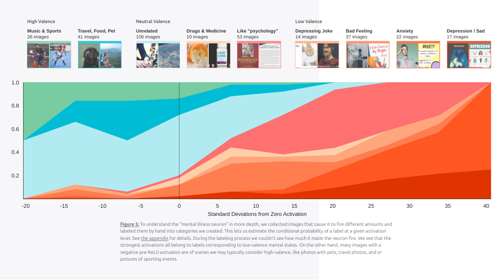
High Valence Neutral Valence Low Valence
Music & Sports Travel, Food, Pet Unrelated Drugs & Medicine Like "psychology" Depressing Joke Bad Feeling Anxiety Depression / Sad
26 images 41 images 106 images 10 images 53 images 14 images 37 images 22 images 17 images
1.01.0
0.80.8
0.60.6
0.40.4
0.20.2
-20-20 -15-15 -10-10 -5-5 0 5 1010 1515 2020 2525 3030 3535 4040
Standard Deviations from Zero ActivationStandard Deviations from Zero Activation
Figure 5: To understand the "mental illness neuron" in more depth, we collected images that cause it to fire different amounts and
labeled them by hand into categories we created. This lets us estimate the conditional probability of a label at a given activation
level. See the appendix for details. During the labeling process we couldn't see how much it made the neuron fire. We see that the
strongest activations all belong to labels corresponding to low-valence mental states. On the other hand, many images with a
negative pre-ReLU activation are of scenes we may typically consider high-valence, like photos with pets, travel photos, and or
pictures of sporting events.
Region Neurons
Content Warning
This section will discuss neurons representing regions of the world, and indirectly ethnicity. The model’s representations are learned from the internet, and may reflect prejudices and stereotypes, sensitive regional situations, and colonialism. Our discussion is intended to be descriptive and frank about what the model learned from the internet data it was trained on, and is not endorsement of the model’s representations or associations. This content may be disturbing to some readers.
From local weather and food, to travel and immigration, to language and race: geography is an important implicit or explicit context in a great deal of online discourse. Blizzards are more likely to be discussed in Canada. Vegemite is more likely to come up in Australia. Discussion of China is more likely to be in Chinese.
We find that CLIP models develop region neurons responding to geographic regions. These neurons might be seen as vision analogues of geographic information in word embeddings [17] . They respond to a wide variety of modalities and facets associated with a given region: country and city names, architecture, prominent public figures, faces of the most common ethnicity, distinctive clothing, wildlife, and local script (if not the Roman alphabet). If shown a world map, even without labels, these neurons fire selectively for the relevant region on the map. 20
Region neurons vary greatly in scale, from neurons corresponding to entire hemispheres — for example, a Northern Hemisphere neuron which responds to bears, moose, coniferous forest, and the entire Northern third of a world map — down to sub-regions of countries, such as the US West Coast. 21 Which regions the model dedicates neurons to seems stochastic and varies across models we examined. 22
Geographical Activation of Region Neurons
Unlabeled map activations: Spatial activations of neurons in response to unlabeled geographical world map. Activations averaged over random crops. Note that neurons for smaller countries or cities may not respond to maps this zoomed out.
Country name activations: Countries colored by activations of neurons in response to rastered images of country names. Activations averaged over font sizes, max over word positions.
City name activations: Cities colored by activations of neurons in response to rastered images of city names. Activations averaged over font sizes, max over word positions.
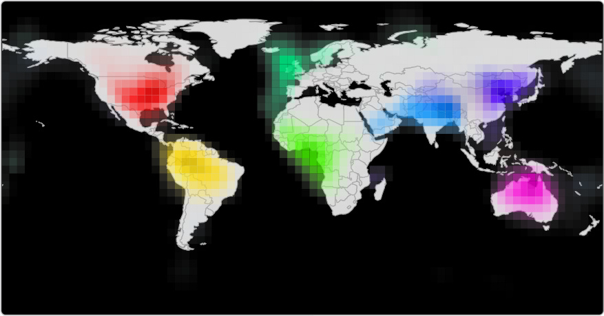
Selected Region Neurons
Most Activating Words
Words which most activate these neurons when rastered into images, out of 10,000 most common English words.
Faceted Text Facet Feature Visualizations
Regional neurons respond to Face Facet many different kinds of images related to their region. Faceted Architecture feature Facet visualization allows us to see some of this diversity.
americans, portuguese, eu, ghana, uganda, netherlands, mumbai, singh, shanghai, asian, australian, american, madrid, africa, tanzania, luxembourg, pakistan, vietnamese, australia, america, usa, argentina, african stockholm, afghanistan, cambodia, adelaide, nsw, americas portugal amsterdam, bangladesh chinese queensland switzerland
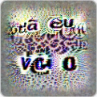
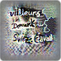
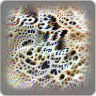
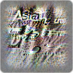
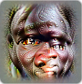
Hover on a neuron to isolate activations.
Click to open Logo Facet in Microscope.
Figure 6: This diagram contextualizes region neurons with a map. Each neuron is mapped to a hue, and then regions where it activates are colored in that hue, with intensity proportional to activiation. If multiple neurons of opposing hues fire, the region will be colored in a desaturated gray. It can show their response to an unlabeled geographical map, to country names, and to city names.
In addition to the neurons shown by default, a variety of neurons are available from four different CLIP models: Selected Units from 4x model . We particularly recommend looking at the "large region neurons" (such as the "Northern Hemisphere" neuron) and at "secondarily regional neurons" (neurons which seem to be primarily about a concept we wouldn't typically conceptualize as geographic such as "entrepreneurship" or "terrorism").
Not all region neurons fire on a globe-scale map. In particular, neurons which code for smaller countries or regions (eg. New York, Israel/Palestine) may not. This means that visualizing behavior on a global map underrepresents the sheer number of region neurons that exist in CLIP. Using the top-activating English words as a heuristic, we estimate around 4% of neurons are regional. 23
In addition to pure region neurons, we find that many other neurons seem to be “secondarily regional.” 24 These neurons don’t have a region as the primary focus, but have some kind of geographic information baked in, firing weakly for regions on a world map related to them. For example, an entrepreneurship neuron that fires for California or a cold neuron that fires for the Arctic. 25 Other neurons link concepts to regions of the world in ways that seem Americentric or even racist: an immigration neuron that responds to Latin America, and a terrorism neuron that responds to the Middle East. 26
CASE STUDY: AFRICA NEURONS
Despite these examples of neurons learning Americentric caricatures, RN50-4x has multiple Africa neurons. Coloring countries there are some areas where the model seems slightly more nuanced by name activation suggests they select for different regions. than one might fear, especially given that CLIP was only trained on English language data. For example, rather than blurring all of Africa into a monolithic entity, the RN50-x4 model develops neurons for three regions within Africa. This is significantly less detailed than its representation of many Western countries, which sometimes have Central? South East neurons for individual countries or even sub-regions of countries, but 27, 28 was still striking to us.
In early explorations it quickly became clear these neurons “know” more about Africa than the authors. For example, one of the first feature visualizations of the South African regional neuron drew the text “Imbewu”, which we learned was a South African TV drama. 29
We chose the East Africa neuron for more careful investigation, again using a conditional probability plot. It fires most strongly for flags, country names, and other strong national associations. 30 Surprisingly, the medium strength activations — the much more 31 common case — have a significantly different distribution and seems to be mostly about ethnicity. Perhaps this is because ethnicity is implicit in all images of people, providing weak evidence for a region, while features like flags are far less frequent, but provide strong evidence when they do occur. This is the first neuron we've studied closely with a distinct regime change between medium and strong activations.
Non-Africa Neutral African
Foreign Symbol Other Other Regional Ethnicity Flags Place Name
169 images 124 images 9 images 163 images 7 images 46 images
1.01.0
0.80.8
0.60.6
0.40.4
0.20.2
-24-24 -22-22 -20-20 -18-18 -16-16 -14-14 -12-12 -10-10 -8-8 -6-6 -4-4 -2-2 0 2 4 6 8 1010 1212 1414 1616 1818 2020 2222
Standard Deviations from Zero ActivationStandard Deviations from Zero Activation
Figure 7: We labeled more than 400 images that causes a neuron that most strongly responds to the word “Ghana” to fire at
different levels of activation, without access to how much each image caused the neuron to fire while labeling. See the appendix
for details.
It fires most strongly for people of African descent as well as African words like country names. It’s pre-ReLU activation is negative
for symbols associated with other countries, like the Tesla logo or British flag, as well as people of non-African descent. Many of its
strongest negative activations are for weaponry such as military vehicles and handguns. Ghana, the country name it responds to
most strongly, has a Global Peace Index rating higher than most African countries, and perhaps it learns this anti-association.
We also looked at the activations of the other two Africa neurons. We suspect they have interesting differences beyond their detection of different country names and flags — why else would the model dedicate three neurons — but we lacked the cultural knowledge to appreciate their subtleties.
Feature properties
So far, we’ve looked at particular neurons to give a sense of the kind of features that exist in CLIP models. It's worth noting several properties that might be missed in the discussion of individual features:
Image-Based Word Embedding: Despite being a vision model, one can produce “image-based word embeddings” with the visual CLIP model by rastering words into images and then feeding these images into the model, and then subtracting off the average over words. Like normal word embeddings, the nearest neighbors of words tend to be semantically related. 32 Word arithmetic [21] such as
V(Img(“King”)) - V(Img(“Man”)) + V(Img(“Woman”)) = V(Img(“Queen”))
work in some cases if we mask non-semantic lexicographic neurons (eg. “-ing” detectors). It seems likely that mixed arithmetic of words and images should be possible.
Limited Multilingual Behavior: Although CLIP’s training data was filtered to be English, many features exhibit limited multilingual responsiveness. For example, a “positivity” neuron responds to images of English “Thank You”, French “Merci”, German “Danke”, and Spanish “Gracias,” and also to English “Congratulations”, German “Gratulieren”, Spanish “Felicidades”, and Indonesian “Selamat”. As the example of Indonesian demonstrates, the model can recognize some words from non Romance/Germanic languages. However, we were unable to find any examples of the model mapping words in non-Latin script to semantic meanings. It can recognize many scripts (Arabic, Chinese, Japanese, etc) and will activate the corresponding regional neurons, but doesn’t seem to be able to map words in those scripts to their meanings. 33
Bias: Certain kinds of bias seem to be embedded into these representations, similar to classic biases in word embeddings (eg. [22] ). The most striking examples are likely racial and religious bias. As mentioned in our discussion of region neurons, there seems to be a “terrorism/Islam” neuron which responds to images of words such as “Terrorism”, “Attack”, “Horror”, “Afraid”, and also “Islam”, “Allah”, “Muslim”. This isn’t just an illusion from looking at a single neuron: the image-based word embedding for “Terrorist” has a cosine similarity of 0.52 with “Muslims”, the highest value we observe for a word that doesn’t include “terror.” 34 Similarily, an “illegal immigration” neuron selects for Latin America countries. (We’ll see further examples of bias in the next section.)
Polysemanticity and Conjoined Neurons: Our qualitative experience has been that individual neurons are more interpretable than random directions; this mirrors observations made in previous work [23, 24, 25, 12, 11] .Although we’ve focused on neurons which seem to have a single clearly defined concept they respond to, many CLIP neurons are “polysemantic” [25, 12] , responding to multiple unrelated features. Unusually, polysemantic neurons in CLIP often have suspicious links between the different concepts they respond to. For example, we observe as Philadelphia/Philipines/Philip neuron, a Christmas/Ass neuron, and an Actor/Velociraptor neuron. The concepts in these neurons seem “conjoined”, overlapping in a superficial way in one facet, and then generalizing out in multiple directions. We haven’t ruled out the possibility that these are just coincidences, given the large number of facets that could overlap for each concept. But if conjoined features genuinely exist, they hint at new potential explanations of polysemanticity. 35
We typically care about features because they’re useful, and CLIP’s features are more useful than most. These features, when ensembled, allow direct retrieval on a variety of queries via the dot product alone.
Untangling the image into its semantics [26] enables the model to perform a wide variety of downstream tasks including imagenet classification, facial expression detection, geolocalization and more. How do they do this? Answering these questions will require us to look at how neurons work in concert to represent a broader space of concepts.
To begin, we’ll make this question concrete by taking a deep dive into one particular task: the Imagenet challenge.
The Imagenet Challenge
To study how CLIP classifies Imagenet, it helps to look at the simplest case. We use a sparse linear model for this purpose, following the methodology of Radford et al [3] . With each class using only 3 neurons on average, it is easy to look at all of the weights. This model, by any modern standard, fares poorly with a top-5 accuracy of 56.4%, but the surprising thing is that such a miserly model can do anything at all. How is each weight carrying so much weight?
ImageNet [27] organizes images into categories borrowed from another project called WordNet. Neural networks typically classify images treating ImageNet classes as structureless labels. But WordNet actually gives them a rich structure of higher level nodes. For example, a Labrador Retriever is a Canine which is a Mammal which is an Animal.
We find that the weights and neurons of CLIP reflect some of this structure. At the highest levels we find conventional categories such as
birds
string instruments
and dogs
that give evidence for the classes that give evidence for the classes bald eagle, kite, magpie, albatross, acoustic guitar, electric guitar, violin, dunlin, oystercatcher, American robin, cello, banjo, plectrum ... jay, stork, ...
that give evidence for the classes Siberian Husky, Miniature Pinscher, Papillon, Cocker Spaniels, Border Collie ...
But we also find nonconventional taxonomies, such as this cluster of water-related classes:
Labels
underwater
bird
seashore
wildlife
water reflection
fish
seafood
sea
snow
sport
Figure 8: This diagram visualizes a submatrix of the full weight matrix that takes neurons in the penultimate layer of Resnet 4x to
the imagenet classes. Each grey circle represents a positive weight. We see the model fails in ways that close but incorrect, such as
its labeling of scorpion as a fish.
such as underwater the sea surface and the seashore
We arrive at a surprising discovery: it seems as though the neurons
appear to arrange themselves into a taxonomy of classes that appear
to mimic, very approximately, the imagenet hierarchy. While there
have been attempts to explicitly integrate this information [28] , CLIP
was not given this information as a training signal. The fact that these
neurons naturally form a hierarchy — form a hierarchy without even
being trained on ImageNet — suggests that such hierarchy may be a
universal feature of learning systems. 36
rockcredrabkingconcchrhermitab fiddlercrabspinycrablogrebastertgreywhitewhseshaalelionarkstarfishshipwrepolckardugongbearhippopotplatypusamusgarfishsturgeonsnoektenfishchjellyfishnautiluscrayfishsnorkelpelicadunlinn albatrossoystergcaallinuletcherlimpkinbitternheronbirdflamingospooncbrillanebblirdackwhitestorkhornstorkbgreillatbegretlackduswckanredduwhiteck dungenessbirdlobsterlifecrabbootterat tigerscorpionsnowmoskibile
Neurons
Understanding Language
The most exciting aspect of CLIP is its ability to do zero-shot classification: it can be “programmed” with natural language to classify images into new categories, without fitting a model. Where linear probes had fixed weights for a limited set of classes, now we have dynamic weight vectors that can be generated automatically from text. Indeed, CLIP makes it possible for end-users to ‘roll their own classifier’ by programming the model via intuitive, natural
language commands - this will likely unlock a broad range of downstream uses of CLIP-style models. Recall that CLIP has two sides, a vision side (which we’ve discussed up to this point) and a language side. The two sides meet at the end, going through some processing and then performing a dot product to create a logit. If we ignore spatial structure 37 , the logit has the following bilinear form for some matrix W ,
where x img is the vector of neurons in the penultimate layer of the network, and x text is the text embedding. We focus on the bilinear interaction term, which governs local interactions in most directions. Although this approximation is somewhat extreme, we believe the bilinear form [30] reflects the morally correct structure to focus on: we see exactly this in many other contrastive models [6] , and also in transformers [5] . We’ll test that this approximation makes correct predictions in the next section.
The bilinear term has a number of interesting interpretations. If we fix x text , the term Wx text gives a dynamic weight vector for T classifying images. On the other hand, if we fix x img , the term x img W gives weights for how much text features correspond to a given image.
We’ll mostly be focusing on using text to create zero-shot weights for images. But it’s worth noting one tool that the other direction gives us. If we fix a neuron on the vision side, we can search for the text that maximizes the logit. We do this with a hill climbing algorithm to find what amounts to the text maximally corresponding to that neuron. Running this on the common emotion neurons, we see that the maximal text 38 matches our expectations:
shocked
has maximal text
omg! ftheshocked #cofphie
crying
has maximal text
sudden collapse crying drea #cfd 7 studio #
happy
has maximal text
smile 📸: ref unknown
sleepy
has maximal text
in a deep sleep : dab wink picture :
evil
has maximal text
unleash your angry evil @
when shocked eyes are placed perfectly after the scare ! via
slightly # shocked & # shocked 📷: trenddrop - horror theme :
broken tepes, crier pic ...
pico crio disaster result video out
#laughselfie. happiness
love a smile like this ! #rohmatyrevolt have a smile so bright like this ! #phantompossil
eb temporary blindness sleeping wink . 📸 movement : #dab
falling asleep stoned too bright , rolf bossert
priscillashiwwe mayward god angry angry # metalheads 😈 sinister devils
angry and evil - shane
And on neurons with secondary emotion roles, these maximal texts bring a layer of clarity their meaning and usage:
incarcerated
has maximal text
penon street corrections inmate - purple and red
guilty - atufalconing , cells racked
mason correctional corrections
Show
NSFW
rejecting
has maximal text
blocked ! please stop hating on this # mississauga parks list
- 3 - false ban by lady
blocked by zero # adultcolor
question mark
has maximal text
is always a question
❓❓❓❓❓❓❓❓
thatbloodyquestion # fashioneatedc _ sona
always ask ❓ weekly
pout
has maximal text
silly pout craze xd # pafliesfaq
duckface #sticker day
goofy faces sticker day
We now focus on the adjoint problem - given a text embedding, we wish to understand neurons that contribute maximally to it.
Emotion Composition
As we see above, English has far more descriptive words for emotions than the vision side has emotion neurons. And yet, the vision side recognizes these more obscure emotions. How can it do that?
We can see what different emotion words correspond to on the vision side by taking attribution, as described in the previous section, to "I feel X" on the language side. This gives us a vector of image neurons for each emotion word. 39 Looking at a list of common emotion words 40 , we find the sparse set of emotion neurons that compose in various ways to span this broader space of emotions. 41 This may relate to a line of thinking in psychology where combinations of basic emotions form the “complex emotions” we experience. 42
For example, the jealousy emotion is success + grumpy. Bored is relaxed + grumpy. Intimate is soft smile + heart - sick. Interested is question mark + heart and inquisitive is question mark + shocked. Surprise is celebration + shock.
Source Sparse Code
= + + -
jealous Champions 1.00 Hug 0.69 Grumpy 0.22 Crying 1.05
= + -
bored Relaxing 1.00 Grumpy 0.14 Sunset 0.10
= + -
intimate Soft smile 1.00 Heart 0.92 Sick 0.80
= + +
surprised Celebration 1.00 Shocked 1.00 Happy 0.17
Figure 9: Sparse codes from "I feel jealous," "I feel bored," "I feel intimate", and "I feel surprised."
Sometimes physical objects contribute to representing emotions. For example, part of "powerful" is a lightning neuron, part of "creative" is a painting neuron, part of "embarrassed" is a neuron corresponding to the years 2000-2012 43 , and part of “let down" is a neuron for destruction.
Source Sparse Code
= + +
powerful Lightning / Miracle 1.00 Evil 0.87 Yoga 0.50
= +
creative Art 1.00 Painting 0.07
= + + -
embarrassed Laugh 1.00 Forehead 0.56 year 2000 - 2012 0.53 Evil 0.60
= + + -
let down Destroyed 1.00 Crying 0.23 Teardrop 0.10 Evil 0.21
Figure 10: Sparse codes from "I feel powerful," "I feel creative," "I feel embarrassed", and "I feel let down."
We also see concerning use of sensitive topics in these emotion vectors, suggesting that problematic spurious correlations are used to caption expressions of emotion. For instance, "accepted" detects LGBT. "Confident" detects overweight. "Pressured" detects Asian culture.
Sparse Code
Source
= +
accepted LGBT 1.00 Sunglasses 0.43
= + + -
confident Overweight 1.00 Soft smile 0.20 Happy 0.15
= + + -
pressured Asian 1.00 Graduation 0.91 Question Mark 0.18
Figure 11: Sparse codes from "I feel accepted," "I feel confident", and "I feel pressured."
Sleeping
Happy
0.15
0.07
We can also search for examples where particular neurons are used, to explore their role in complex emotions. We see the mental illness neuron contributes to emotions like “stressed,” “anxious,” and “mad.”
Sparse Code
Source
= + +
stressed Success + Princess 1.00 Mental health disorder 0.74
= + +
anxious Shocked 1.00 Mental health disorder 0.57
= + +
mad Evil 1.00 Serious 0.37
Figure 12: Sparse codes from "I feel stressed," "I feel anxious", and "I feel mad."
Pink objects 0.23
Sick 0.36
Mental health disorder
0.27
So far, we’ve only looked at a subset of these emotion words. We can also see a birds-eye view of this broader landscape of emotions by visualizing every attribution vector together.
aroused inspired insecure
sad victimizedvictimized eager weak insignificantinsignificant repelled energeticenergetic
worried hurt abandonedabandoned awful empty exposed hesitant busy fearful
helpless let down remorsefulremorseful sensitivesensitive nauseatednauseated guilty jealous proud rushed frightenedfrightened anxious
despair grief fragile bad distant intimate successfulsuccessful inquisitiveinquisitive courageouscourageous nervous surprisedsurprised
out ofout of
overwhelmedoverwhelmedamazed controlcontrol embarrassedembarrassedviolated lonely loving interestedinterested curious thankful astonishedastonished startled scared
appalled confused worthlessworthless isolated numb rejected creative inadequateinadequate peaceful respectedrespected excited shocked horrifiedhorrified
excluded disrespecteddisrespectedhumiliatedhumiliated judgmentaljudgmental skepticalskeptical detestabledetestable valued confidentconfident tired happy hopeful accepted joyful
dismissivedismissive annoyed disappointeddisappointedbored depresseddepressed stressed dismayed unfocusedunfocused optimisticoptimistic trusting content
resentfulresentful disapprovingdisapprovingdisillusioneddisillusionedapatheticapathetic indifferentindifferent betrayed sleepy withdrawnwithdrawn free awe cheeky
frustratedfrustrated ashamed indignantindignant critical perplexedperplexed aggressiveaggressive revolted persecutedpersecuted playful
pressuredpressured infuriatedinfuriated disgusteddisgusted threatenedthreatened provoked powerful furious
angry mad hostile
Figure 13: We can create an atlas [32] of complex emotions by applying non-negative matrix factorization to the emotion attribution vectors and using the factors to color each cell. The atlas resembles common feeling wheels [31] hand-crafted by psychologists to explain the space of human emotions, indicating that the vectors have a high-level structure that resembles emotion research in psychology.
This atlas has a few connections to classical emotion research. When we use just 2 factors, we roughly reconstruct the canonical moodaxes used in much of psychology: valence and arousal. If we increase to 7 factors, we nearly reconstruct a well known categorization of these emotions into happy, surprised, sad, bad, disgusted, fearful, and angry, except with “disgusted” switched for a new category related to affection that includes “valued,” “loving,” “lonely,” and “insignificant.”
Typographic Attacks
As we’ve seen, CLIP is full of multimodal neurons which respond to both images and text for a given concept. Given how strongly these neurons react to text, we wonder: can we perform a kind of nonprogrammatic adversarial attack – a typographic attack – simply using handwriting?
To test this hypothesis, we took several common items and deliberately mislabeled them. We then observed how this affects ImageNet classifications (discussed earlier). These attacks often change the image’s classification.
NO LABEL
| 85.61% Granny Smith |
|---|
| 0.42% iPod |
| 0% library |
| 0% pizza |
| 0% rifle |
| 0% toaster |
| 15.98% laptop computer |
| 0% iPod |
| 0% library |
| 0% pizza |
| 0% rifle |
| 0% toaster |
| 61.71% coffee mug |
| 0% iPod |
| 0% library |
| 0% pizza |
| 0% rifle |
| 0% toaster |
| 98.33% rotary dial telephone |
| 0% iPod |
| 0% library |
| 0% pizza |
| 0% rifle |
| 0% toaster |
| 50.58% plant pot |
| 0% iPod |
| 0% library |
| 0% pizza |
| 0% rifle 0% toaster |
LABELED “IPOD”
Granny Smith
iPod
library
pizza
rifle
toaster
laptop compu
iPod
library
pizza
rifle
toaster
coffee mug
iPod
library
pizza
rifle
toaster
rotary dial telep
iPod
library
pizza
rifle
toaster
plant pot
iPod
library
pizza
rifle
toaster
Figure 14: Physical typographic attacks. Above we see the CLIP RN50-4x model's classifica objects labeled with incorrect ImageNet classes. Each row corresponds to an object, and e corresponds to a labeling. Some attacks are more effective than others, and some objects resilient to attack.
While many classic adversarial attacks focus on making imperceptible changes to images [23] , typographic attacks are more similar to work such as adversarial patches [33] and physical adversarial examples [34] . Adversarial patches are stickers that can be placed on real-life objects in order to cause neural nets to misclassify those objects as something else – for example, as toasters. Physical adversarial examples are complete 3D objects that are reliably misclassified from all perspectives, such as a 3D-printed turtle that is reliably misclassified as a rifle. Typographic attacks are both weaker and stronger than these. On the one hand, they only work for models with multimodal neurons. On the other hand, once you understand this property of the models, the attacks can be executed nonprogrammatically and as black-box attacks, available to any adversary – including six year olds.
Evaluating Typographic Attacks
Our physical adversarial examples are a proof of concept, but they don’t give us a very good sense of how frequently typographic attacks succeed. Duct tape and markers don't scale, so we create an automated setup to measure the attack’s success rate on the ImageNet validation set.
Chihuahua 17.5%
Miniature Pinscher 14.3%
French Bulldog 7.3%
Griffon Bruxellois 5.7%
Italian Greyhound 4%
West Highland White Terrier 2.1%
Schipperke 2%
Maltese 2%
Australian Terrier 1.9%
Target class:
pizza
Attack text:
pizza
| pizza | 83.7% |
|---|---|
| pretzel | 2% |
| Chihuahua | 1.5% |
| broccoli | 1.2% |
| hot dog | 0.6% |
| Boston Terrier | 0.6% |
| French Bulldog | 0.5% |
| spatula | 0.4% |
| Italian Greyhound | 0.3% |
Figure 15: An example of the fixed automated attack setup for the target class pizza with the attack text pizza. Attacks were generated using the same (arbitrarily chosen) eight coordinates and using a consistent font style, as shown here. We consider an attack to have succeeded if the top class was changed to the attack class.
We found text snippets for our attacks in two different ways. Firstly, we manually looked through the multimodal model's neurons for those that appear sensitive to particular kinds of text. This is how we found the piggy bank, waste container, and Siamese cat attacks. Secondly, we brute-force searched through all of the ImageNet class names looking for short class names which are, in and of themselves, effective attacks. This is how we found rifle, pizza, radio, iPod, shark, and library.
Using this setup, we found several attacks to be reasonably effective. The most successful attacks achieve a 97% attack success rate with only around 7% of the image's pixels changed. These results are competitive with the results found in Adversarial Patch, albeit on a different model.
Neuron responding to piggy banks also responds to "price", "cheap", and "$".
Neuron responding to waste containers (and necklaces) also responds to "trash", "waste", and "garbage."
| Target class | Attack text | Pixel cover | Success Linear probes |
|---|---|---|---|
waste container |
trash | 7.59% | 95.4% |
iPod |
iPod | 6.8% | 94.7% |
rifle |
rifle | 6.41% | 91% |
pizza |
pizza | 8.11% | 92.3% |
radio |
radio | 7.73% | 77% |
great white shark |
shark | 8.33% | 62.2% |
library |
library | 9.95% | 75.9% |
Siamese cat |
meow | 8.44% | 46.5% |
piggy bank |
$$$$$ | 6.99% | 36.4% |
Figure 16: Probabilities were collected from CLIP 4x. Pixel cover measures the attack's impact on the original image: the average percentage of pixels that were changed by any amount (an L0-norm) in order to add the attack. Success rate is measured over 1000 ImageNet validation images with an attack considered to have succeeded if the attack class is the most likely. We do not consider an attack to have succeeded if the attack-free image was already classified as the attack class. For reference, 74.2% of images were classified correctly before the addition of any attacks.
Comparison with the Stroop Effect
The model’s response to these adversarial images is reminiscent of the Stroop effect [35] . Just as our models make errors when adversarial text is added to images, humans are slower and more error prone when images have incongruent labels.
A classic demonstration of the Stroop effect is that recognizing a 'mislabeled' color (eg. green, blue, red) is harder than normal. To compare CLIP’s behavior to these human experiments, we had CLIP classify these stimuli by color, using its zero-shot classification. Unlike humans, CLIP can’t slow down to compensate for the harder task. Instead of taking a longer amount of time for the incongruent stimuli, it has a very high error rate.
| black | 58.66% | 0.44% black |
|---|---|---|
| red | 7.79% | 98.93% red |
| green | 4.73% | 0.07% green |
| blue | 6.44% | 0.12% blue |
| purple | 5.74% | 0.05% purple |
| black |
4.65% |
|
| red | 73.95% | |
| green | 0.74% | Label equals color. |
| blue | 1.11% | |
| purple | 0.8% | |
| black | 0.53% | 0.15% black |
| red | 0.21% | 82.23% red |
| green | 98.42% | 17.11% green |
| blue | 0.12% | 0.05% blue |
| purple | 0.17% | 0.03% purple |
| black | 11.49% | 0.14% black |
| red | 3.97% | 97.87% red |
| green | 2.18% | 0.06% green |
| blue | 66.1% | 1.35% blue |
| purple | 5.92% | 0.08% purple |
| black | 1.96% | 0.25% black |
| red | 0.35% | 88.8% red |
| green | 0.32% | 0.04% green |
| blue | 0.83% | 0.19% blue |
| purple | 95.15% | 10.27% purple |
Figure 17: A Stroop effect experiment. Above we see the CLIP RN50-4x model's classificat various words colored with various colors. Activations were gathered using the zero-shot m with the prompt "my favorite word, written in the color _____".
Expand more examples
Appendix: Methodological Details
Conditional Probability Plots
If we really want to understand the behavior of a neuron, it’s not enough to look at the cases where it maximally fires. We should look at the full spectrum: the cases where it weakly fired, the cases where it was on the border of firing, and the cases where it was strongly inhibited from firing. This seems especially true for highly abstract neurons, where weak activations can reveal “associated stimuli,” such as a Donald Trump neuron firing for Mike Pence.
Since we have access to a validation set from the same distribution the model was trained on, we can sample the distribution of stimuli that cause a certain level of activation by iterating through the validation set until we find an image that causes that activation.
To more rigorously characterize this, we create a plot showing the conditional probability of various categories as a function of neuron activation, following the example of Curve Detectors [36] . To do this, we defined uniformly spaced buckets between the maximally inhibitory and maximally excitatory activation values, and sampled a fixed number of stimuli for each activation range. Filling in the most extreme buckets requires checking the neuron activations for millions of stimuli. Once we have a full set of stimuli in each bucket, we blind a labeler to the activation of each stimuli, and have them select salient categories they observed, informed by the hypothesis we have for the neuron. The human labeler then categorized each stimuli into these categories, while blinded to the activation.
We plot the activation axis in terms of standard deviations of activation from zero, since activations have an arbitrary scale. But keep in mind that activations aren’t Gaussian distributed, and have much thicker tails.
In reading these graphs, it’s important to keep in mind that different activation levels can have many orders of magnitude differences in probability density. In particular, probability density peaks around zero and decays exponentially to the tails. This means that false negatives for a rare category will tend to not be very visible, because they’ll be crowded out at zero: these graphs show a neuron’s precision, but not recall. Curve Detectors [36] discusses these issues in more detail.
An alternative possibility is to look at the distribution of activations conditioned on a category. We take this approach in our second plot for the Trump neuron. These plots can help characterize how the neuron responds to rare categories in regions of higher density, and can help resolve concerns about recall. However, one needs some way to get samples conditioned on a category for these experiments, and it’s possible that your process may not be representative. For our purposes, since these neurons are so high-level, we used a popular image search to sample images in a category.
Faceted Feature Visualization
A neuron is said to have multiple facets [13] if it responds to multiple, distinct categories of images. For example, a pose-invariant dog-head detector detects dog heads tilted to the left, right, or facing straight on [12] . A grocery store detector [13] fires for both the exteriors and interiors of grocery stores. Boundary detectors [37] look for a difference in texture from one side to the other but doesn’t care which is which. A neuron may even fire for many different, unrelated categories of images [25, 12] . We refer to these as polysemantic neurons.
Feature visualization [24, 25, 38, 39, 40, 41] is a technique where the input to a neural network is optimized to create a stimuli demonstrating some behavior, typically maximizing the activation of a neuron. Neurons that possess multiple facets present particular challenges to feature visualization as the multiple facets are difficult to represent as a single image. When such neurons are encountered, feature visualization often tries to draw both facets at once (making it nonsensical), or just reveal one facet 44 . Both cases are inadequate.
We are aware of two past approaches to improving feature visualization for multi-faceted neurons. The first approach is to find highly diverse images that activate a given neuron, and use them as seeds for the feature visualization optimization process [13] . The second tries to combine feature visualization together with a term that encourages diversity of the activations on earlier layers [25] .
Here we propose a new feature visualization objective, faceted feature visualization, that allows us to steer the feature visualization towards a particular theme (e.g. text, logos, facial features, etc), defined by a collection of images. The procedure works as follows: first we collect examples of images in this theme, and train a linear probe on the lower layers of the model to discriminate between those images and generic natural images. We then do feature visualization by maximizing the penalized objective,
T f ( g ( x )) + w ( g ( x ) ⊙∇ f ( g ( x ))) , where w are the weights of that linear probe, and f ∘ g is the original feature visualization objective, composed of two functions, , g which takes the input into an intermediate activations and f which takes those intermediate activations into the final objective.
For the facets used in this paper, the architecture, indoors and nature facets use images from SUN397 [42] , pose uses bounding boxes from VOC2012 [43] , and face uses a mixture of fairface [44] and Flickr-FacesHQ [45] .
The reader may be curious why we do not maximize f ( g ( x )) + wT g ( x ) instead. We have found that, in practice, the former objective produces far higher quality feature visualizations; we believe this is because the ∇ f ( g ( x )) acts as a acts as a filter, downweighting the irrelevant components of g ( x ) that do not contribute to the objective f ∘ g ( x ) . We have found, too, replacing the diversity term on the intermediate activations g in [25] with g ( x ) ⊙∇ f ( g ( x )) improves the quality of resulting visualizations dramatically.
Acknowledgments
We are deeply grateful to Sandhini Agarwal, Daniela Amodei, Dario Amodei, Tom Brown, Jeff Clune, Steve Dowling, Gretchen Krueger, Brice Menard, Reiichiro Nakano, Aditya Ramesh, Pranav Shyam, Ilya Sutskever and Martin Wattenberg.
Author Contributions
Gabriel Goh: Research lead. Gabriel Goh first discovered multimodal neurons, sketched out the project direction and paper outline, and did much of the conceptual and engineering work that allowed the team to investigate the models in a scalable way. This included developing tools for understanding how concepts were built up and decomposed (that were applied to emotion neurons), developing zero-shot neuron search (that allowed easy discoverability of neurons), and working with Michael Petrov on porting CLIP to microscope. Subsequently developed faceted feature visualization, and text feature visualization.
Chris Olah: Worked with Gabe on the overall framing of the article, actively mentored each member of the team through their work providing both high and low level contributions to their sections, and contributed to the text of much of the article, setting the stylistic tone. He worked with Gabe on understanding the neuroscience literature and better understanding the relevant neuroscience literature. Additionally, he wrote the sections on region neurons and developed diversity feature visualization which Gabe used to create faceted feature visualization
Alec Radford: Developed CLIP. First observed that CLIP was learning to read. Advised Gabriel Goh on project direction on a weekly basis. Upon the discovery that CLIP was using text to classify images, proposed typographical adversarial attacks as a promising research direction.
Shan Carter: Worked on initial investigation of CLIP with Gabriel Goh. Did multimodal activation atlases to understand the space of multimodal representations and geometry, and neuron atlases, which potentially helped the arrangement and display of neurons. Provided much useful advice on the visual presentation of ideas, and helped with many aspects of visual design.
Michael Petrov: Worked on the initial investigation of multimodal neurons by implementing and scaling dataset examples. Discovered, with Gabriel Goh, the original “Spider-Man” multimodal neuron in the dataset examples, and many more multimodal neurons. Assisted a lot in the engineering of Microscope both early on, and at the end, including helping Gabriel Goh with the difficult technical challenges of porting microscope to a different backend.
Chelsea Voss†: Performed investigation of the typographical attacks phenomena, both via linear probes and zero-shot, confirming that the attacks were indeed real and state of the art. Proposed and successfully found “in-the-wild” attacks in the zero-shot classifier. Subsequently wrote the section “typographical attacks”. Upon completion of this part of the project, investigated responses of neurons to rendered text on dictionary words. Also assisted with the organization of neurons into neuron cards.
Nick Cammarata†: Drew the connection between multimodal neurons in neural networks and multimodal neurons in the brain, which became the overall framing of the article. Created the conditional probability plots (regional, Trump, mental health), labeling more than 1500 images, discovered that negative pre-ReLU activations are often interpretable, and discovered that neurons sometimes contain a distinct regime change between medium and strong activations. Wrote the identity section and the emotion sections, building off Gabriel’s discovery of emotion neurons and discovering that “complex” emotions can be broken down into simpler ones. Edited the overall text of the article and built infrastructure allowing the team to collaborate in Markdown with embeddable components.
Ludwig Schubert: Helped with general infrastructure.
† equal contributors
Discussion and Review
Review 1 - Anonymous Review 2 - Anonymous Review 3 - Anonymous
Footnotes
-
Quiroga's full quote, from New Scientist reads: "I think that’s the excitement to these results. You are looking at the far end of the transformation from metric, visual shapes to conceptual memory-related information. It is that transformation that underlies our ability to understand the world. It’s not enough to see something familiar and match it. It’s the fact that you plug visual information into the rich tapestry of memory that brings it to life." We elided the portion discussing memory since it was less relevant. [ ↩ ]
-
It’s important to note that the vast majority of people these models recognize don’t have a specific neuron, but instead are represented by a combination of neurons. Often, the contributing neurons are conceptually related. For example, we found a Donald Trump neuron which fires (albeit more weakly) for Mike Pence, contributing to representing him. [ ↩ ]
-
Some of the neurons we found seem strikingly similar to those described in neuroscience. A Donald Trump neuron we found might be seen as similar to Quiroga et al’s Bill Clinton neuron [1] . A Star Wars neuron we find seems analogous to a biological Star Wars neuron described Quiroga et al’s follow up paper [2] . And although we don’t find an exact Jennifer Aniston neuron, we do find a neuron for the TV show “Friends” which fires for her. [ ↩ ]
-
The authors also kindly shared an alternative version from earlier experiments, where the training objective was an autoregressive language modelling objective, instead of a contrastive objective. The features seem pretty similar. [ ↩ ]
-
We found it challenging to make feature visualization work on the largest CLIP models. The reasons why remain unclear. See faceted feature visualization. [ ↩ ]
-
The alignment with the text side of the model might be seen as an additional form of multimodality, perhaps analogous to a human neuron responding to hearing a word rather than seeing it (see Quiroga’s later work). But since that is an expected result of the training objective, it seems less interesting. [ ↩ ]
-
Many researchers are interested in “grounding” language models by training them on tasks involving another domain, in the hope of them learning a more real world understanding of language. The abstract features we find in vision models can be seen as a kind of “inverse grounding”: vision taking on more abstract features by connection to language. [ ↩ ]
-
This includes some of the classic kinds of bias we see in word embeddings, such as a “terrorism”/”Islam” neuron, or an
- “Immigration”/”Mexico” neuron. See discussion in the region neurons section. [ ↩ ]
-
We checked a sample of 50 neurons from this layer and classified them as interpretable, polysemantic, or uninterpretable. We found that 76% of the sampled neurons were interpretable. (As a 95% confidence interval, that’s between 64% and 88%.) A further 18% were polysemantic but with interpretable facets, and 6% were as yet uninterpretable. [ ↩ ]
-
By this, we mean both that it responds to people presenting as this gender, as well as that it responds to concepts associated with that gender. [ ↩ ]
-
Some neurons seem less abstract. For example, typographic features like the “-ing” detector seem to roughly fire based on how far a string is away in Levenshtein distance. Although, even these show remarkable generalization, such as responding to different font sizes and rotated text. [ ↩ ]
-
The “grandmother neuron” is a classic example in neuroscience of a hypothetical neuron that responds in a highly specific way to some complex concept or stimulus – such as a person’s grandmother. [ ↩ ]
-
There’s a neuron we conceptualize as an LGBT neuron, which responds to the Pride flag, rainbows, and images of words like “LGBT”. Previous work (Wang & Kosinski) has suggested that neural networks might be able to determine sexual orientation from facial structure. This work has since been thoroughly rebutted and we wish to emphasize that we see no evidence CLIP models do this. [ ↩ ]
-
For neurons related to age and gender, see "person trait neurons." Region neurons seem closely related to race and national origin, responding to ethnicities associated with given regions of the world. For sexual orientation, see the LGBT neuron, which responds to
things like pride flags and the word "LGBT." There appear to be individual neurons closely linked to disability status, mental health status, and pregnancy status. Another neuron seems related to parental status, responding to images of children, children's toys, children's drawings, and words like "mom", "dad", or "parent". [ ↩ ]
-
Examples of bias in AI models, and work drawing attention to it, has helped the research community to become somewhat “alert” to potential bias with regards to gender and race. However, CLIP could easily have biases which we are less alert to, such as biased behavior towards parents when there’s a child’s drawing in the background. [ ↩ ]
-
The model’s dataset was collected in 2019 and likely emphasizes content from around that time. In the case of the Donald Trump neuron, it seems likely there would have also been a Hillary Clinton neuron if data had been collected in 2016 instead. (There are other neurons which weakly respond to Hillary Clinton, but more strongly fire for other content.) [ ↩ ]
-
As we were labeling images for the conditional probability plot in Figure 2 we were surprised that images related to black and gay rights consistently caused strong negative activations. However, since there were four images in that category, we decided to do a follow-up experiment on more images.
We searched Google Images for the terms "black rights" and "gay rights" and took ten top images for each term without looking at their activations. Then we validated these images reliably cause the Trump neuron to fire in the range of roughly negative ~3-6 standard deviations from zero. The images that cause less strong negative activations near -3 standard deviations tend to have broad symbols such as an image of several black teenagers raising their arm and fist that causes a -2.5 standard deviations. Conversely, images of more easy to recognize and specific symbols such as rainbow flags or photos of Martin Luther King Jr consistently cause activations of at least -4 standard deviations. In Figure 3 we also show activations related to photos of Martin Luther King Jr. [ ↩ ]
-
We include neurons such as the creative neuron in discussion of emotions because (1) they are sometimes included in emotion wheels, (2) they seem to play a role in captioning emotions and feelings, and (3) being more inclusive in our discussion allow us to explore more of the model. [ ↩ ]
-
In addition to CLIP neurons potentially incorrectly recognizing cues, they cues themselves don’t necessarily reflect people’s mental states. For example, facial expressions don’t reliably correspond to someone experiencing an emotion [16] . Similarly, an image including words related to an emotion doesn’t mean that emotion is what subjects in the image feel. [ ↩ ]
-
Map responses seem to be strongest around distinctive geographic landmarks, such as the Gulf Of Carpentaria and Cape York Peninsula for Australia, or the Gulf of Guinea for Africa. [ ↩ ]
-
One interesting property of the regional neuron “hierarchy” is that the parent neuron often doesn’t fire when a child is uniquely implicated. So while the Europe neuron fires for the names of European cities, the general United States neuron generally does not, and instead lets neurons like the West Coast neuron fire. See also another example of a neuron “hierarchy” in The ImageNet Challenge section. [ ↩ ]
-
Some region neurons seem to form more consistently than others. Which neurons form doesn't seem to be fully explained by prevalence in the dataset: for example, every model has an Australia neuron, but not all models seem to have a UK neuron. Why is that? One intuition is that there’s more variance in neurons when there’s a natural supercategory they can be grouped into. For example, when an individual UK neuron doesn’t exist, it seems to be folded into a Europe neuron. In Africa, we sometimes see multiple different Africa neurons (in particular a South/West Africa neuron and an East Africa neuron), while other times there seems to be a single unified Africa neuron. In contrast, Australia is perhaps less subdividable, since it’s both a continent and country. [ ↩ ]
-
To estimate the fraction of neurons that are regional, we looked at what fraction of each neuron's top-activating words (ie. words it responds to when rastered as images) were explicitly linked to geography, and used this as a heuristic for whether a neuron was regional. To do this, we created a list of geographic words consisting of continent / country / province / city names, their corresponding adjectival and demonymic forms, and currencies.
- We found 2.5% (64) of RN50-x4 neurons had geographic words for all of the five maximally activating words. This number varied
between 2-4% in other CLIP models. However, looking only at neurons for which all top five words are explicitly geographic misses many region neurons which respond strongly to words with implicit regional connotations (eg. “hockey” for a Canada neuron, “volkswagen” for a German neuron, “palm” for an equatorial neuron). We bucketed neurons by fraction of five most activating words that are geographic, then estimated the fraction of each bucket that were regional. With many neurons, the line was quite blurry (should we include polysemantic neurons where one case is regional? What about “secondarily regional neurons”?). For a relatively conservative definition, this seems to get us about 4%, but with a more liberal one you might get as high as 8%. [ ↩ ]
-
Some caution is needed in interpreting these neurons as truly regional, rather than spuriously weakly firing for part of a world map. Important validations are that they fire for the same region on multiple different maps, and if they respond to words for countries or cities in that region. [ ↩ ]
-
We also find an angel neuron which responds to “Los Angeles” and California on a map. [ ↩ ]
-
We also find that the linear combination of neurons that respond to Russia on a map strongly responds to Pepe the frog, a symbol of white nationalism in the United States allegedly promoted by Russia. Our impression is that Russians probably wouldn’t particularly see this as a symbol of Russia, suggesting it is more “Russia as understood by the US.” [ ↩ ]
-
It’s important to keep in mind that the model can represent many more things using combinations of neurons. Where the model dedicates neurons may give us some sense of the level of nuance, but we shouldn’t infer, for example, that it doesn’t somehow represent individual African countries. [ ↩ ]
-
To contextualize this numerically, the model seems to dedicate ~4% of its regional neurons to Africa, which accounts for ~20% of the world’s landmass, and ~15% of the world’s population. [ ↩ ]
-
One of the long-standing dreams of interpretability is that we’ll be able to learn from neural networks [18, 19] . Learning about a TV drama might not be the kind of deep insights one might have envisioned, but it is a charming proof of concept. [ ↩ ]
-
This also includes images of website TLDs, cell service providers, television networks, and maps. [ ↩ ]
-
Neuron activations tend to follow an exponential distribution in their tails, a point that was made to us by Brice Menard. This means that strong activations are more common than you’d expect in a Gaussian (where the tail decays at exp(-x^2)), but are much less common than weaker activations. [ ↩ ]
-
A comparison of CLIPs image-based word embedding to examples in Collobert [20] ’s example:
| Original Word |
Nearest Neighbors Collobert embeddings [20] |
Nearest Neighbors CLIP image-based embeddings |
|---|---|---|
| France | Austria,Belgium,Germany,Italy,Greece,Sweden,Norway, Europe,Hungary,Switzerland |
French,Francis,Paris,Les,Des,Sans,Le,Pairs,Notre,Et |
| Jesus | God,Sati,Christ,Satan,Indra,Vishnu,Ananda,Parvati,Grace | Christ,God,Bible,Gods,Praise,Christians,Lord,Christian, Gospel,Baptist |
| xbox [↩] |
Amiga,Playstation,Msx,Ipod,Sega,Ps#,Hd,Dreamcast, Geforce,Capcom |
Xbox,Gaming,Nintendo,Playstation,Console,Box,Lightbox, Sony,Sega,Games,Microsoft |
-
One interesting question is why the model developed reading abilities in latin alphabet languages, but not others. Was it because more data of that type slipped into the training data, or (the more exciting possibility) because it’s easier to learn a language from limited data if you already know the alphabet? [ ↩ ]
-
By “image-based word embedding”, we mean the activation for an image of that word, with the average activation over images of 10,000 English words subtracted off. The intuition is that this removes generic “black text on white background” fatures. If one measures the cosine similarity between “Terrorism” and “Muslim” without subtracting off the average, it’s much higher at about 0.98, but that’s because all values are shifted up due to sharing the black text white-background. [ ↩ ]
-
In the past, when we've observed seemingly polysemantic neurons, we've considered two possibilities: either it is responding to some shared feature of the stimuli, in which case it isn’t really polysemantic, or it is genuinely responding to two unrelated cases. Usually we distinguish these cases with feature visualization. For example, InceptionV1 4e:55 responds to cars and cat heads. One could imagine it being the case that it’s responding to some shared feature — perhaps cat eyes and car lights look similar. But feature visualization establishes a facet selecting for a globally coherent cat head, whiskers and all, as well as the metal chrome and corners of a car. We concluded that it was genuinely OR(cat, car).
Conjoined features can be seen as a kind of mid-point between detecting a shared low-level feature and detecting independent cases. Detecting Santa Claus and “turn” are clearly true independent cases, but there was a different facet where they share a low-level feature.
Why would models have conjoined features? Perhaps they’re a vestigial phenomenon from early in training when the model couldn’t distinguish between the two concepts in that facet. Or perhaps there’s a case where they’re still hard to distinguish, such as large font sizes. Or maybe it just makes concept packing more efficient, as in the superposition hypothesis. [ ↩ ]
-
We’ve seen hints of similar structure in region neurons, with a whole world neuron, a northern hemisphere neuron, a USA neuron, and then a West Coast neuron. [ ↩ ]
-
In order to use a contrastive loss, the 3d activation tensor of the last convolutional layer must discard spatial information and be reduced to a single vector which can be dot producted with the language embedding. CLIP does this with an attention layer, first generating attention weights
-
Cherry picked from a set of 28 [ ↩ ]
-
Since the approximations we made in the previous section aren’t exact, we double-checked these attribution vectors for all of the
- “emotion equations” shown by taking the top image neuron in each one, artificially increasing its activation at the last layer on the vision side when run on a blank image, and confirming that the logit for the corresponding emotion word increases on the language side. [ ↩ ]
-
We used a list of words from Willcox et al [31] , which has been used to construct modern visualizations of feeling wheels. [ ↩ ]
-
We do this by taking the vectors Wx text for the prompts "i am feeling {emotion}, "Me feeling {emotion} on my face", "a photo of me with a {emotion} expression on my face" on each one of the emotion-words on the emotion-wheel. We assign each prompt a label corresponding to the emotion-word, and then we then run sparse logistic regression to find the neurons that maximally discriminate between the attribution vectors. For the purposes of this article, these vectors are then cleaned up by hand by removing neurons that respond to bigrams. [ ↩ ]
-
The theory of constructed emotion. [ ↩ ]
-
explain the neuron is a time period and the language side thinks of it as embarrassing [ ↩ ]
-
The difference between the two is believed to be related to the phenomena of mutual inhibition, see the InceptionV1 pose invariant dog head circuit [12] . [ ↩ ]
References
- Invariant visual representation by single neurons in the human brain [PDF]
Quiroga, R.Q., Reddy, L., Kreiman, G., Koch, C. and Fried, I., 2005. Nature, Vol 435(7045), pp. 1102--1107. Nature Publishing Group.
- Explicit encoding of multimodal percepts by single neurons in the human brain
- Quiroga, R.Q., Kraskov, A., Koch, C. and Fried, I., 2009. Current Biology, Vol 19(15), pp. 1308--1313. Elsevier.
- Learning Transferable Visual Models From Natural Language Supervision [link]
- Radford, A., Kim, J.W., Hallacy, C., Ramesh, A., Goh, G., Agarwal, S., Sastry, G., Askell, A., Mishkin, P., Clark, J., Krueger, G. and Sutskever, I., 2021.
- Deep Residual Learning for Image Recognition [PDF]
He, K., Zhang, X., Ren, S. and Sun, J., 2015. CoRR, Vol abs/1512.03385.
- Attention is all you need
Vaswani, A., Shazeer, N., Parmar, N., Uszkoreit, J., Jones, L., Gomez, A.N., Kaiser, L. and Polosukhin, I., 2017. Advances in neural information processing systems, pp. 5998--6008.
- Improved deep metric learning with multi-class n-pair loss objective
Sohn, K., 2016. Advances in neural information processing systems, pp. 1857--1865.
7. Contrastive multiview coding
Tian, Y., Krishnan, D. and Isola, P., 2019. arXiv preprint arXiv:1906.05849.
- Linear algebraic structure of word senses, with applications to polysemy
- Arora, S., Li, Y., Liang, Y., Ma, T. and Risteski, A., 2018. Transactions of the Association for Computational Linguistics, Vol 6, pp. 483--495. MIT Press.
- Visualizing and understanding recurrent networks [PDF]
Karpathy, A., Johnson, J. and Fei-Fei, L., 2015. arXiv preprint arXiv:1506.02078.
10. Object detectors emerge in deep scene cnns [PDF]
Zhou, B., Khosla, A., Lapedriza, A., Oliva, A. and Torralba, A., 2014. arXiv preprint arXiv:1412.6856.
- Network Dissection: Quantifying Interpretability of Deep Visual Representations [PDF]
Bau, D., Zhou, B., Khosla, A., Oliva, A. and Torralba, A., 2017. Computer Vision and Pattern Recognition.
- Zoom In: An Introduction to Circuits
Olah, C., Cammarata, N., Schubert, L., Goh, G., Petrov, M. and Carter, S., 2020. Distill, Vol 5(3), pp. e00024--001.
- Multifaceted feature visualization: Uncovering the different types of features learned by each neuron in deep neural networks
- [PDF]
Nguyen, A., Yosinski, J. and Clune, J., 2016. arXiv preprint arXiv:1602.03616.
- Sparse but not ‘grandmother-cell’ coding in the medial temporal lobe
Quiroga, R.Q., Kreiman, G., Koch, C. and Fried, I., 2008. Trends in cognitive sciences, Vol 12(3), pp. 87--91. Elsevier.
- Concept cells: the building blocks of declarative memory functions
Quiroga, R.Q., 2012. Nature Reviews Neuroscience, Vol 13(8), pp. 587--597. Nature Publishing Group.
- Emotional expressions reconsidered: Challenges to inferring emotion from human facial movements
- Barrett, L.F., Adolphs, R., Marsella, S., Martinez, A.M. and Pollak, S.D., 2019. Psychological science in the public interest, Vol 20(1), pp. 1- -68. Sage Publications Sage CA: Los Angeles, CA.
17. Geographical evaluation of word embeddings [PDF]
Konkol, M., Brychc{'\i}n, T., Nykl, M. and Hercig, T., 2017. Proceedings of the Eighth International Joint Conference on Natural Language Processing (Volume 1: Long Papers), pp. 224--232.
18. Using Artificial Intelligence to Augment Human Intelligence [link]
Carter, S. and Nielsen, M., 2017. Distill. DOI: 10.23915/distill.00009
19. Visualizing Representations: Deep Learning and Human Beings [link]
Olah, C., 2015.
20. Natural language processing (almost) from scratch
Collobert, R., Weston, J., Bottou, L., Karlen, M., Kavukcuoglu, K. and Kuksa, P., 2011. Journal of machine learning research, Vol 12(ARTICLE), pp. 2493--2537.
21. Linguistic regularities in continuous space word representations
Mikolov, T., Yih, W. and Zweig, G., 2013. Proceedings of the 2013 conference of the north american chapter of the association for computational linguistics: Human language technologies, pp. 746--751.
22. Man is to computer programmer as woman is to homemaker? debiasing word embeddings
- Bolukbasi, T., Chang, K., Zou, J.Y., Saligrama, V. and Kalai, A.T., 2016. Advances in neural information processing systems, pp. 4349-4357.
23. Intriguing properties of neural networks [PDF]
Szegedy, C., Zaremba, W., Sutskever, I., Bruna, J., Erhan, D., Goodfellow, I. and Fergus, R., 2013. arXiv preprint arXiv:1312.6199.
24. Visualizing higher-layer features of a deep network [PDF]
Erhan, D., Bengio, Y., Courville, A. and Vincent, P., 2009. University of Montreal, Vol 1341, pp. 3.
25. Feature Visualization [link]
Olah, C., Mordvintsev, A. and Schubert, L., 2017. Distill. DOI: 10.23915/distill.00007
26. How does the brain solve visual object recognition?
DiCarlo, J.J., Zoccolan, D. and Rust, N.C., 2012. Neuron, Vol 73(3), pp. 415--434. Elsevier.
27. Imagenet: A large-scale hierarchical image database
- Deng, J., Dong, W., Socher, R., Li, L., Li, K. and Fei-Fei, L., 2009. 2009 IEEE conference on computer vision and pattern recognition, pp. 248--255.
28. BREEDS: Benchmarks for Subpopulation Shift
Santurkar, S., Tsipras, D. and Madry, A., 2020. arXiv preprint arXiv:2008.04859.
- Global Weighted Average Pooling Bridges Pixel-level Localization and Image-level Classification [PDF]
Qiu, S., 2018. CoRR, Vol abs/1809.08264.
30. Separating style and content with bilinear models
Tenenbaum, J.B. and Freeman, W.T., 2000. Neural computation, Vol 12(6), pp. 1247--1283. MIT Press.
- The feeling wheel: A tool for expanding awareness of emotions and increasing spontaneity and intimacy
- Willcox, G., 1982. Transactional Analysis Journal, Vol 12(4), pp. 274--276. SAGE Publications Sage CA: Los Angeles, CA.
32. Activation atlas
Carter, S., Armstrong, Z., Schubert, L., Johnson, I. and Olah, C., 2019. Distill, Vol 4(3), pp. e15.
33. Adversarial Patch [PDF]
Brown, T., Mané, D., Roy, A., Abadi, M. and Gilmer, J., 2017. arXiv preprint arXiv:1712.09665.
- Synthesizing Robust Adversarial Examples [PDF]
Athalye, A., Engstrom, L., Ilyas, A. and Kwok, K., 2017. arXiv preprint arXiv:1707.07397.
35. Studies of interference in serial verbal reactions.
Stroop, J.R., 1935. Journal of experimental psychology, Vol 18(6), pp. 643. Psychological Review Company.
36. Curve Detectors
Cammarata, N., Goh, G., Carter, S., Schubert, L., Petrov, M. and Olah, C., 2020. Distill, Vol 5(6), pp. e00024--003.
37. An overview of early vision in inceptionv1
Olah, C., Cammarata, N., Schubert, L., Goh, G., Petrov, M. and Carter, S., 2020. Distill, Vol 5(4), pp. e00024--002.
- Deep inside convolutional networks: Visualising image classification models and saliency maps [PDF]
Simonyan, K., Vedaldi, A. and Zisserman, A., 2013. arXiv preprint arXiv:1312.6034.
- Deep neural networks are easily fooled: High confidence predictions for unrecognizable images [PDF]
Nguyen, A., Yosinski, J. and Clune, J., 2015. Proceedings of the IEEE Conference on Computer Vision and Pattern Recognition, pp. 427-436. DOI: 10.1109/cvpr.2015.7298640
40. Inceptionism: Going deeper into neural networks [HTML]
- Mordvintsev, A., Olah, C. and Tyka, M., 2015. Google Research Blog.
41. Plug & play generative networks: Conditional iterative generation of images in latent space [PDF]
Nguyen, A., Clune, J., Bengio, Y., Dosovitskiy, A. and Yosinski, J., 2016. arXiv preprint arXiv:1612.00005.
42. Sun database: Large-scale scene recognition from abbey to zoo
Xiao, J., Hays, J., Ehinger, K.A., Oliva, A. and Torralba, A., 2010. 2010 IEEE computer society conference on computer vision and pattern recognition, pp. 3485--3492.
43. The pascal visual object classes (voc) challenge
Everingham, M., Van Gool, L., Williams, C.K., Winn, J. and Zisserman, A., 2010. International journal of computer vision, Vol 88(2), pp. 303--338. Springer.
44. Fairface: Face attribute dataset for balanced race, gender, and age
- Kärkkäinen, K. and Joo, J., 2019. arXiv preprint arXiv:1908.04913.
- A style-based generator architecture for generative adversarial networks
Karras, T., Laine, S. and Aila, T., 2019. Proceedings of the IEEE conference on computer vision and pattern recognition, pp. 4401--4410.
Updates and Corrections
If you see mistakes or want to suggest changes, please create an issue on GitHub.
Reuse
Diagrams and text are licensed under Creative Commons Attribution CC-BY 4.0 with the source available on GitHub, unless noted otherwise. The figures that have been reused from other sources don’t fall under this license and can be recognized by a note in their caption: “Figure from …”.
Citation
For attribution in academic contexts, please cite this work as
BibTeX citation
@article{goh2021multimodal,
author = {Goh, Gabriel and †, Nick Cammarata and †, Chelsea Voss and Carter, Shan and Petrov, Michael and
Schubert, Ludwig and Radford, Alec and Olah, Chris},
title = {Multimodal Neurons in Artificial Neural Networks},
journal = {Distill},
year = {2021},
note = {https://distill.pub/2021/multimodal-neurons},
doi = {10.23915/distill.00030}
}
Distill is dedicated to clear explanations of machine learning
About Submit Prize Archive RSS GitHub Twitter ISSN 2476-0757